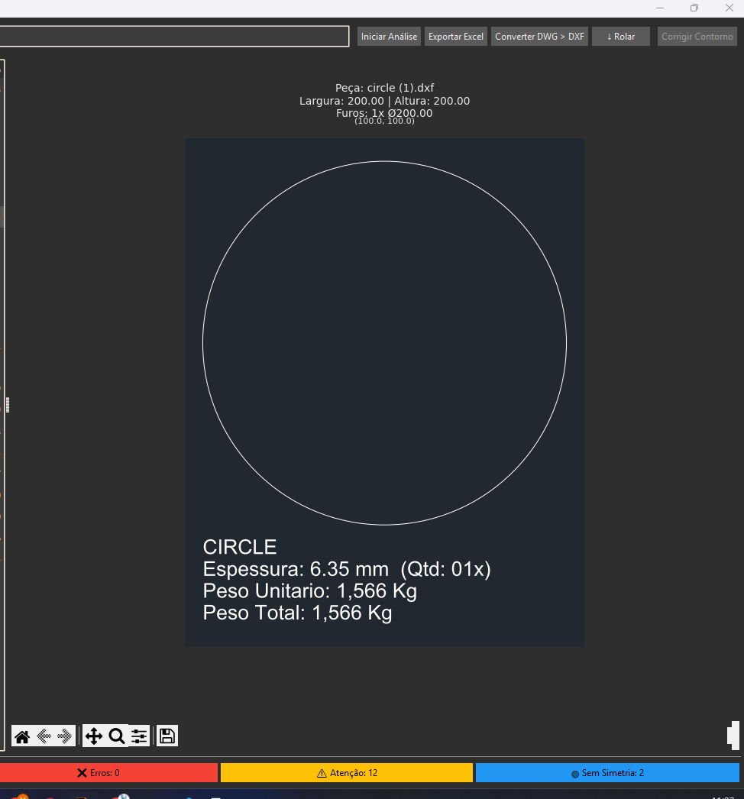

Script Para Anáise de Treliças.
Projeto: Automação de Levantamento de Materiais (Aço/Treliças)
Tela de verificação, exibindo status de cada arquivo.
Visualização do contorno da peça analisada.
O Desafio
O processo de levantamento de materiais para treliças era manual, lento e suscetível a erros. Engenheiros gastavam horas preciosas analisando desenhos e calculando manualmente a quantidade de aço, um trabalho repetitivo que atrasava o fluxo de orçamentos e produção.
A Solução
Criei um script de automação que lê e interpreta diretamente os arquivos de projeto em formato DXF. A ferramenta analisa a geometria da treliça, calcula o aço total necessário e otimiza o resultado para o padrão comercial (barras de 6 metros), entregando uma lista de materiais precisa em segundos.
Tecnologias Utilizadas:
- Python
- ⚙️ Biblioteca Tkinter
- ⚙️ Biblioteca Ezdxf